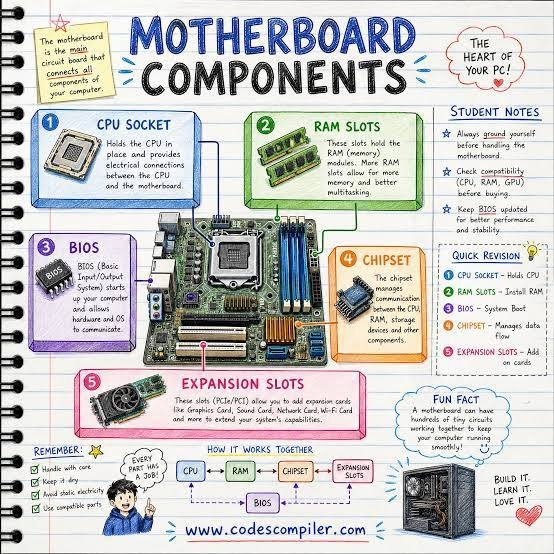
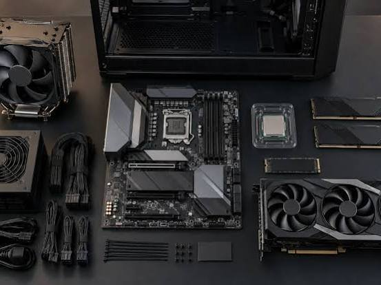

What are the main components of a computer?
The main components of a computer include: • CPU: Processes instructions and controls computer operations. • RAM: Temporarily stores data and instructions currently in use. • Storage: Permanently stores files and programs using devices such as SSDs and HDDs. • Motherboard: Connects the main hardware components. • Input Devices: Allow users to enter data, such as keyboards and mice. • Output Devices: Display or produce results, such as monitors and printers. • Power Supply: Provides electrical power to the computer.


